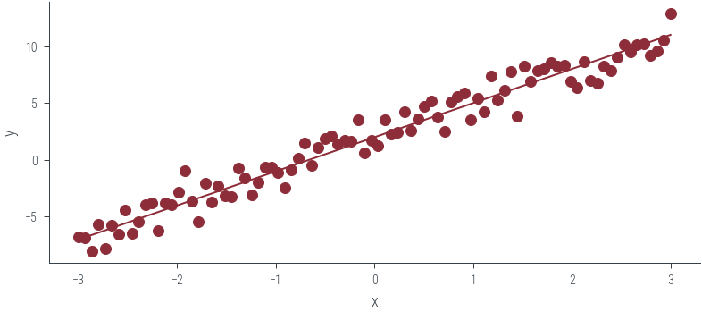

import torch
import torch.autograd.functional as F
import torch.distributions as dist
import numpy as np
import matplotlib.pyplot as plt
from matplotlib.animation import FuncAnimation
import ipywidgets as widgets
import seaborn as sns
import pandas as pd
%matplotlib inline
# Retina display
%config InlineBackend.figure_format = 'retina'Sampling from an unnormalized distribution
from tueplots import bundles
plt.rcParams.update(bundles.beamer_moml())
#plt.rcParams.update(bundles.icml2022())
# Also add despine to the bundle using rcParams
plt.rcParams['axes.spines.right'] = False
plt.rcParams['axes.spines.top'] = False
# Increase font size to match Beamer template
plt.rcParams['font.size'] = 16
# Make background transparent
plt.rcParams['figure.facecolor'] = 'none'import hamiltorchhamiltorch.set_random_seed(123)
device = torch.device('cuda' if torch.cuda.is_available() else 'cpu')devicedevice(type='cuda')gt_distribution = torch.distributions.Normal(0, 1)
# Samples from the ground truth distribution
def sample_gt(n):
return gt_distribution.sample((n,))
samples = sample_gt(1000)x_lin = torch.linspace(-3, 3, 1000)
y_lin = torch.exp(gt_distribution.log_prob(x_lin))
plt.plot(x_lin, y_lin, label='Ground truth')
plt.legend()<matplotlib.legend.Legend at 0x7efdfc51dd30>
# Logprob function to be passed to Hamiltorch sampler
def logprob(x):
return gt_distribution.log_prob(x)logprob(torch.tensor([0.0]))tensor([-0.9189])# Markov chain
x_start = torch.tensor([0.0])
samples = []
for i in range(100):
prop = torch.distributions.Normal(x_start, 10).sample()
samples.append(prop)
x_start = prop
plt.plot(torch.stack(samples).ravel())# Initial state
x0 = torch.tensor([0.0])
num_samples = 5000
step_size = 0.3
num_steps_per_sample = 5
hamiltorch.set_random_seed(123)params_hmc = hamiltorch.sample(log_prob_func=logprob, params_init=x0,
num_samples=num_samples, step_size=step_size,
num_steps_per_sample=num_steps_per_sample)Sampling (Sampler.HMC; Integrator.IMPLICIT)
Time spent | Time remain.| Progress | Samples | Samples/sec
0d:00:00:07 | 0d:00:00:00 | #################### | 5000/5000 | 686.98
Acceptance Rate 0.99params_hmc = torch.tensor(params_hmc)def run_hmc(logprob, x0, num_samples, step_size, num_steps_per_sample):
torch.manual_seed(123)
params_hmc = hamiltorch.sample(log_prob_func=logprob, params_init=x0,
num_samples=num_samples, step_size=step_size,
num_steps_per_sample=num_steps_per_sample)
return torch.stack(params_hmc)
params_hmc = run_hmc(logprob, x0, num_samples, step_size, num_steps_per_sample)Sampling (Sampler.HMC; Integrator.IMPLICIT)
Time spent | Time remain.| Progress | Samples | Samples/sec
0d:00:00:07 | 0d:00:00:00 | #################### | 5000/5000 | 676.50
Acceptance Rate 0.99params_hmc.shapetorch.Size([5000, 1])# Trace plot
plt.plot(params_hmc, label='Trace')
plt.xlabel('Iteration')
plt.ylabel('Parameter value')Text(0, 0.5, 'Parameter value')# view first 500 samples
plt.plot(params_hmc[:50], label='Trace')
plt.xlabel('Iteration')
plt.ylabel('Parameter value')Text(0, 0.5, 'Parameter value')# KDE plot
import seaborn as sns
plt.figure()
sns.kdeplot(params_hmc.ravel().detach().numpy(), label='Samples', shade=True, color='C1')
plt.plot(x_lin, y_lin, label='Ground truth')
plt.xlabel('Parameter value')
plt.ylabel('Density')
plt.legend()<matplotlib.legend.Legend at 0x7f2dbc637d30>
# Create MP4 HTML5 video showing sampling process
def create_mp4_samples(samples, x_lin, y_lin, filename='samples.mp4', dpi=600):
fig, ax = plt.subplots(figsize=(4,2), dpi=dpi)
ax.set_xlim(-3, 3)
ax.set_ylim(0, 1)
ax.set_xlabel('Parameter value')
ax.set_ylabel('Density')
ax.plot(x_lin, y_lin, label='Ground truth')
ax.legend()
# Add a "x" marker to the plot for each sample at y=0
x_marker, = ax.plot([], [], 'x', color='C1', label='Samples')
ax.legend()
def init():
x_marker.set_data([], [])
return x_marker,
def animate(i):
x_marker.set_data(samples[:i], torch.zeros(i))
return x_marker,
anim = FuncAnimation(fig, animate, init_func=init,
frames=len(samples), interval=20, blit=True)
anim.save(filename, dpi=dpi, writer='ffmpeg')
create_mp4_samples(params_hmc[:100], x_lin, y_lin, filename='../figures/sampling/mcmc/normal.mp4', dpi=600)
from IPython.display import Video
Video('../figures/sampling/mcmc/normal.mp4', width=400)# sample from Mixture of Gaussians
mog = dist.MixtureSameFamily(
mixture_distribution=dist.Categorical(torch.tensor([0.3, 0.7])),
component_distribution=dist.Normal(torch.tensor([-2.0, 2.0]), torch.tensor([1.0, 0.5]))
)
samples = mog.sample((1000,))
sns.kdeplot(samples.numpy(), label='Samples', shade=True, color='C1')<AxesSubplot:ylabel='Density'># Logprob function to be passed to Hamiltorch sampler
def logprob(x):
return mog.log_prob(x)
logprob(torch.tensor([0.0]))tensor([-4.1114])params_hmc = run_hmc(logprob, x0, num_samples, step_size, num_steps_per_sample)Sampling (Sampler.HMC; Integrator.IMPLICIT)
Time spent | Time remain.| Progress | Samples | Samples/sec
0d:00:00:10 | 0d:00:00:00 | #################### | 5000/5000 | 459.19
Acceptance Rate 0.99# Trace plot
plt.plot(params_hmc, label='Trace')
y_lin = torch.exp(mog.log_prob(x_lin))
# KDE plot
plt.figure()
sns.kdeplot(params_hmc.ravel().detach().numpy(), label='Samples', shade=True, color='C1')
# Limit KDE plot to range of ground truth
plt.xlim(-3, 3)
plt.plot(x_lin, y_lin, label='Ground truth')
plt.xlabel('Parameter value')
plt.ylabel('Density')
plt.legend()<matplotlib.legend.Legend at 0x7f2dbc3a65b0># Create MP4 HTML5 video showing sampling process
create_mp4_samples(params_hmc[:500], x_lin, y_lin, filename='../figures/sampling/mcmc/mog.mp4', dpi=600)Video('../figures/sampling/mcmc/mog.mp4', width=400)def p_tilde(x):
# normalising constant for standard normal distribution
Z = torch.sqrt(torch.tensor(2*np.pi))
return dist.Normal(0, 1).log_prob(x).exp()*Z
def p_tilde_log_prob(x):
# normalising constant for standard normal distribution
Z = torch.sqrt(torch.tensor(2*np.pi))
return dist.Normal(0, 1).log_prob(x) + torch.log(Z)# Plot unnormalized distribution
x_lin = torch.linspace(-3, 3, 1000)
y_lin = p_tilde(x_lin)
plt.plot(x_lin, y_lin, label='Unnormalized distribution')
# Plot normalized distribution
plt.plot(x_lin, dist.Normal(0, 1).log_prob(x_lin).exp(), label='Normalized distribution')
plt.legend()<matplotlib.legend.Legend at 0x7f2dbc385c70>
# HMC over unnormalized distribution
# Logprob function to be passed to Hamiltorch sampler
def logprob(x):
return p_tilde_log_prob(x)# HMC
params_hmc = run_hmc(logprob, x0, num_samples, step_size, num_steps_per_sample)Sampling (Sampler.HMC; Integrator.IMPLICIT)
Time spent | Time remain.| Progress | Samples | Samples/sec
0d:00:00:10 | 0d:00:00:00 | #################### | 5000/5000 | 479.28
Acceptance Rate 0.99# Trace plot
plt.plot(params_hmc[:500], label='Trace')# KDE plot
sns.kdeplot(params_hmc.ravel().detach().numpy(), label='Samples', shade=True, color='C1')
plt.plot(x_lin, y_lin, label='Unnormalized distribution', lw=2)
plt.plot(x_lin, dist.Normal(0, 1).log_prob(x_lin).exp(), label='Normalized distribution', lw=2)
plt.legend()<matplotlib.legend.Legend at 0x7f2dbc2657f0>Coin Toss
Working with probabilities
prior = dist.Beta(1, 1)
data = torch.tensor([1.0, 1.0, 1.0, 0.0, 0.0])
n = len(data)
def log_prior(theta):
return prior.log_prob(theta)
def log_likelihood(theta):
return dist.Bernoulli(theta).log_prob(data).sum()
def log_joint(theta):
return log_prior(theta) + log_likelihood(theta)try:
params_hmc_theta = run_hmc(log_joint, torch.tensor([0.5]), 5000, 0.3, 5)
except Exception as e:
print(e)Sampling (Sampler.HMC; Integrator.IMPLICIT)
Time spent | Time remain.| Progress | Samples | Samples/sec
Expected value argument (Tensor of shape (1,)) to be within the support (Interval(lower_bound=0.0, upper_bound=1.0)) of the distribution Beta(), but found invalid values:
tensor([-0.1017], requires_grad=True)Working with logits
# Let us work instead with logits
def log_prior(logits):
return prior.log_prob(torch.sigmoid(logits)).sum()
def log_likelihood(logits):
return dist.Bernoulli(logits=logits).log_prob(data).sum()
def log_joint(logits):
return (log_prior(logits) + log_likelihood(logits))params_hmc_logits = run_hmc(log_joint, torch.tensor([0.0]), 1000, 0.3, 5)Sampling (Sampler.HMC; Integrator.IMPLICIT)
Time spent | Time remain.| Progress | Samples | Samples/sec
0d:00:00:03 | 0d:00:00:00 | #################### | 1000/1000 | 275.76
Acceptance Rate 0.99fig, ax = plt.subplots(nrows=2, sharex=True)
ax[0].plot(params_hmc_logits[:500], label='Trace for logits')
ax[1].plot(torch.sigmoid(params_hmc_logits[:500]), label='Trace for probabilities')
ax[0].set_ylabel('Logits')
ax[1].set_ylabel('Computed Probabilities\n (From Logits)')
ax[1].set_xlabel('Iteration')Text(0.5, 0, 'Iteration')
# Create a function to update the KDE plot with the specified bw_adjust value
def update_kde_plot(bw_adjust):
plt.clf() # Clear the previous plot
plt.hist(torch.sigmoid(params_hmc_logits[:, 0]).detach().numpy(), bins=100, density=True, label='Samples (Histogram)', color='C2', alpha=0.5, lw=1)
sns.kdeplot(torch.sigmoid(params_hmc_logits[:, 0]).detach().numpy(), label='Samples (KDE)', shade=False, color='C1', clip=(0, 1), bw_adjust=bw_adjust, lw=2)
x_lin = torch.linspace(0, 1, 1000)
y_lin = dist.Beta(1+3, 1+2).log_prob(x_lin).exp()
plt.plot(x_lin, y_lin, label='True posterior')
plt.legend()
# Create the slider widget for bw_adjust
bw_adjust_slider = widgets.FloatSlider(value=0.1, min=0.01, max=4.0, step=0.01, description='bw_adjust:')
# Create the interactive plot
interactive_plot = widgets.interactive(update_kde_plot, bw_adjust=bw_adjust_slider)
# Display the interactive plot
display(interactive_plot)# Plot histogram of samples
plt.hist(torch.sigmoid(params_hmc_logits[:, 0]).detach().numpy(), bins=100, density=True, label='Samples (Histogram)', color='C2', alpha=0.5, lw=1 )
# Plot posterior KDE using seaborn but clip to [0, 1]
sns.kdeplot(torch.sigmoid(params_hmc_logits[:, 0]).detach().numpy(), label='Samples (KDE)', shade=False, color='C1', clip=(0, 1), bw_adjust=0.1, lw=2)
# True posterior
x_lin = torch.linspace(0, 1, 1000)
y_lin = dist.Beta(1+3, 1+2).log_prob(x_lin).exp()
plt.plot(x_lin, y_lin, label='True posterior')
plt.legend()<matplotlib.legend.Legend at 0x7f1850e258b0># Linear regression for 1 dimensional input using HMC
x_lin = torch.linspace(-3, 3, 90)
theta_0_true = torch.tensor([2.0])
theta_1_true = torch.tensor([3.0])
f = lambda x: theta_0_true + theta_1_true * x
eps = torch.randn_like(x_lin) *1.0
y_lin = f(x_lin) + eps
plt.scatter(x_lin, y_lin, label='Data', color='C0')
plt.plot(x_lin, f(x_lin), label='Ground truth')
plt.xlabel('x')
plt.ylabel('y')Text(0, 0.5, 'y')
# Esimate theta_0, theta_1 using HMC assuming noise variance is known to be 1
def logprob(theta):
y_pred = theta[0] + x_lin * theta[1]
return dist.Normal(y_pred, 1).log_prob(y_lin).sum()
def log_prior(theta):
return dist.Normal(0, 1).log_prob(theta).sum()
def log_posterior(theta):
return logprob(theta) + log_prior(theta)params_hmc_lin_reg = run_hmc(log_posterior, torch.tensor([0.0, 0.0]), 1000, 0.05, 10)Sampling (Sampler.HMC; Integrator.IMPLICIT)
Time spent | Time remain.| Progress | Samples | Samples/sec
0d:00:00:06 | 0d:00:00:00 | #################### | 1000/1000 | 157.83
Acceptance Rate 0.95params_hmc_lin_regtensor([[0.0000, 0.0000],
[1.8463, 1.5993],
[2.1721, 3.8480],
...,
[1.9128, 2.9478],
[2.1689, 2.9928],
[1.8748, 3.0217]])lps = []
for p in params_hmc_lin_reg:
lps.append(log_posterior(p))plt.plot(torch.stack(lps).ravel()[100:])log_posterior(params_hmc_lin_reg[0]), log_posterior(params_hmc_lin_reg[1]), log_posterior(params_hmc_lin_reg[2])(tensor(-1554.2708), tensor(-392.7923), tensor(-242.6276))# Plot the traces corresponding to the two parameters
fig, axes = plt.subplots(2, 1, sharex=True)
for i, param_vals in enumerate(params_hmc_lin_reg.T):
axes[i].plot(param_vals, label='Trace')
axes[i].set_xlabel('Iteration')
axes[i].set_ylabel(fr'$\theta_{i}$')
# Plot the true values as well
for i, param_vals in enumerate([theta_0_true, theta_1_true]):
axes[i].axhline(param_vals.numpy(), color='C1', label='Ground truth')
axes[i].legend()findfont: Font family ['cursive'] not found. Falling back to DejaVu Sans.
findfont: Generic family 'cursive' not found because none of the following families were found: Apple Chancery, Textile, Zapf Chancery, Sand, Script MT, Felipa, Comic Neue, Comic Sans MS, cursive# Plot KDE of the samples for the two parameters
fig, axes = plt.subplots(2, 1, sharex=True)
for i, param_vals in enumerate(params_hmc_lin_reg.T):
sns.kdeplot(param_vals.detach().numpy(), label='Samples', shade=True, color='C1', ax=axes[i])
axes[i].set_ylabel(fr'$\theta_{i}$')
# Plot the true values as well
for i, param_vals in enumerate([theta_0_true, theta_1_true]):
axes[i].axvline(param_vals.numpy(), color='C0', label='Ground truth')
axes[i].legend()# Plot the posterior predictive distribution
plt.figure()
plt.scatter(x_lin, y_lin, label='Data', color='C0')
plt.plot(x_lin, f(x_lin), label='Ground truth', color='C1', linestyle='--')
plt.xlabel('x')
plt.ylabel('y')
# Get posterior samples. Thin first 100 samples to remove burn-in
posterior_samples = params_hmc_lin_reg[100:].detach()
y_hat = posterior_samples[:, 0].unsqueeze(1) + x_lin * posterior_samples[:, 1].unsqueeze(1)
# Plot mean and 95% confidence interval
plt.plot(x_lin, y_hat.mean(axis=0), label='Mean', color='C2')
plt.fill_between(x_lin, y_hat.mean(axis=0) - 2 * y_hat.std(axis=0), y_hat.mean(axis=0) + 2 * y_hat.std(axis=0), alpha=0.5, label='95% CI', color='C2')
plt.legend()<matplotlib.legend.Legend at 0x7f2db1983640># Using a neural network with HMC
class Net(torch.nn.Module):
def __init__(self):
super().__init__()
self.fc1 = torch.nn.Linear(1, 1)
def forward(self, x):
x = self.fc1(x)
return xnet = Net()
netNet(
(fc1): Linear(in_features=1, out_features=1, bias=True)
)net.state_dict()OrderedDict([('fc1.weight', tensor([[0.7689]])),
('fc1.bias', tensor([0.2034]))])hamiltorch.util.flatten(net)tensor([0.7689, 0.2034], grad_fn=<CatBackward0>)theta_params = hamiltorch.util.flatten(net) + 1.0
theta_paramstensor([1.7689, 1.2034], grad_fn=<AddBackward0>)from nn_manual_hmc import log_joint as log_joint_nnparams_hmc = run_hmc(log_joint_nn, torch.tensor([0.2, 0.5]), 1000, 0.05, 5)Sampling (Sampler.HMC; Integrator.IMPLICIT)
Time spent | Time remain.| Progress | Samples | Samples/sec
0d:00:00:04 | 0d:00:00:00 | #################### | 1000/1000 | 202.36
Acceptance Rate 0.94# Plot the traces corresponding to the two parameters
fig, axes = plt.subplots(2, 1, sharex=True)
for i, param_vals in enumerate(params_hmc.T):
axes[i].plot(param_vals, label='Trace')
axes[i].set_xlabel('Iteration')
axes[i].set_ylabel(fr'$\theta_{i}$')# Plot KDE of the samples for the two parameters
fig, axes = plt.subplots(2, 1, sharex=True)
for i, param_vals in enumerate(params_hmc.T):
sns.kdeplot(param_vals.detach().numpy(), label='Samples', shade=True, color='C1', ax=axes[i])
axes[i].set_ylabel(fr'$\theta_{i}$')
# Mark the true values
axes[0].axvline(theta_0_true.numpy(), color='C0', label='Ground truth')
axes[1].axvline(theta_1_true.numpy(), color='C0', label='Ground truth')<matplotlib.lines.Line2D at 0x7f2db24ad8e0># Get posterior samples. Thin first 100 samples to remove burn-in
posterior_samples = params_hmc.detach()
y_preds = []
with torch.no_grad():
for theta in posterior_samples:
params_list = hamiltorch.util.unflatten(net, theta)
params = net.state_dict()
for i, (name, _) in enumerate(params.items()):
params[name] = params_list[i]
y_pred = torch.func.functional_call(net, params, x_lin.unsqueeze(1)).squeeze()
y_preds.append(y_pred)torch.stack(y_preds).shapetorch.Size([1000, 90])y_mean = torch.stack(y_preds).mean(axis=0)
y_std = torch.stack(y_preds).std(axis=0)
plt.plot(x_lin, y_mean, label='Mean', color='C2')
plt.fill_between(x_lin, y_mean - 2 * y_std, y_mean + 2 * y_std, alpha=0.5, label='95% CI', color='C2')
plt.scatter(x_lin, y_lin, label='Data', color='C0')
plt.plot(x_lin, f(x_lin), label='Ground truth', color='C1', linestyle='--')
plt.xlabel('x')
plt.ylabel('y')
Text(0, 0.5, 'y')step_size = 0.0005
num_samples = 1000
L = 30
burn = -1
store_on_GPU = False
debug = False
model_loss = 'regression'
mass = 1.0
# Effect of tau
# Set to tau = 1000. to see a function that is less bendy (weights restricted to small bends)
# Set to tau = 1. for more flexible
tau = 1.0 # Prior Precision
tau_out = 110.4439498986428 # Output Precision
r = 0 # Random seed
tau_list = []
for w in net.parameters():
tau_list.append(tau) # set the prior precision to be the same for each set of weights
tau_list = torch.tensor(tau_list)
# Set initial weights
params_init = hamiltorch.util.flatten(net).clone()
# Set the Inverse of the Mass matrix
inv_mass = torch.ones(params_init.shape) / mass
integrator = hamiltorch.Integrator.EXPLICIT
sampler = hamiltorch.Sampler.HMC
hamiltorch.set_random_seed(r)
params_hmc_f = hamiltorch.sample_model(net, x_lin.view(-1, 1), y_lin.view(-1, 1), params_init=params_init,
model_loss=model_loss, num_samples=100,
burn = burn, inv_mass=inv_mass,step_size=step_size,
num_steps_per_sample=L,tau_out=tau_out, tau_list=tau_list,
debug=debug, store_on_GPU=store_on_GPU,
sampler = sampler)
# At the moment, params_hmc_f is on the CPU so we move to GPU
params_hmc_gpu = [ll for ll in params_hmc_f[1:]]
Sampling (Sampler.HMC; Integrator.IMPLICIT)
Time spent | Time remain.| Progress | Samples | Samples/sec
0d:00:00:02 | 0d:00:00:00 | #################### | 100/100 | 49.73
Acceptance Rate 1.00torch.stack(params_hmc_gpu).shapetorch.Size([100, 2])# Let's predict over the entire test range [-2,2]
pred_list, log_probs_f = hamiltorch.predict_model(net, x = x_lin.view(-1, 1), y = y_lin.view(-1, 1), samples=params_hmc_gpu,
model_loss=model_loss, tau_out=tau_out,
tau_list=tau_list)pred_list.shapetorch.Size([100, 90, 1])plt.plot(x_lin, pred_list.mean(axis=0).ravel())
# Plot the true function
plt.plot(x_lin, f(x_lin), label='Ground truth', color='C1', linestyle='--')
# Plot standard deviation
plt.fill_between(x_lin, pred_list.mean(axis=0).ravel() - 2 * pred_list.std(axis=0).ravel(), pred_list.mean(axis=0).ravel() + 2 * pred_list.std(axis=0).ravel(), alpha=0.5, label='95% CI', color='C2')
plt.scatter(x_lin, y_lin, label='Data', color='C0')
plt.xlabel('x')
plt.ylabel('y')
plt.legend()<matplotlib.legend.Legend at 0x7f1a94574c70>from nn_manual_hmc_classification import log_joint, x_moon, y_moon, net_classificationplt.scatter(x_moon[:, 0].cpu().numpy(), x_moon[:, 1].cpu().numpy(), c=y_moon.cpu().numpy(), cmap='bwr', alpha=0.5)<matplotlib.collections.PathCollection at 0x7efdcec96820>net_classificationNet_Classification(
(fc1): Linear(in_features=2, out_features=5, bias=True)
(fc2): Linear(in_features=5, out_features=5, bias=True)
(fc3): Linear(in_features=5, out_features=1, bias=True)
)hamiltorch.util.flatten(net_classification).shapetorch.Size([51])# number of params in the network
D = hamiltorch.util.flatten(net_classification).shape[0]log_joint(torch.zeros(D).to(device))tensor(-740.0131, device='cuda:0')params_hmc = run_hmc(log_joint, torch.tensor(torch.zeros(D).to(device)), 2000, 0.01, 2)Sampling (Sampler.HMC; Integrator.IMPLICIT)
Time spent | Time remain.| Progress | Samples | Samples/sec
0d:00:00:21 | 0d:00:00:00 | #################### | 2000/2000 | 93.82
Acceptance Rate 0.96/tmp/ipykernel_948360/3753994728.py:1: UserWarning: To copy construct from a tensor, it is recommended to use sourceTensor.clone().detach() or sourceTensor.clone().detach().requires_grad_(True), rather than torch.tensor(sourceTensor).
params_hmc = run_hmc(log_joint, torch.tensor(torch.zeros(D).to(device)), 2000, 0.01, 2)params_hmc.shapetorch.Size([2000, 51])plt.plot(params_hmc[:, 2].cpu().numpy())# Get posterior predictive over the 2D grid
posterior_samples = params_hmc.detach()
# Consider burning the first 100 samples
posterior_samples = posterior_samples[1000:]
y_preds = []
n_grid = 200
lims = 4
twod_grid = torch.tensor(np.meshgrid(np.linspace(-lims, lims, n_grid), np.linspace(-lims, lims, n_grid))).float().to(device)
with torch.no_grad():
for theta in posterior_samples:
params_list = hamiltorch.util.unflatten(net_classification, theta)
params = net_classification.state_dict()
for i, (name, _) in enumerate(params.items()):
params[name] = params_list[i]
y_pred = torch.func.functional_call(net_classification, params, twod_grid.view(2, -1).T).squeeze()
y_preds.append(y_pred)x_moon.shapetorch.Size([1000, 2])y_preds[0].shapetorch.Size([40000])logits = torch.stack(y_preds).mean(axis=0).reshape(n_grid, n_grid)
logitstensor([[-20.4181, -19.7507, -19.0839, ..., 4.1155, 4.1154, 4.1154],
[-20.7736, -20.1060, -19.4386, ..., 4.1154, 4.1154, 4.1154],
[-21.1293, -20.4614, -19.7938, ..., 4.1154, 4.1153, 4.1153],
...,
[-98.6203, -98.0886, -97.5601, ..., -5.8248, -5.5091, -5.2027],
[-99.1825, -98.6539, -98.1300, ..., -6.1079, -5.7854, -5.4731],
[-99.7477, -99.2237, -98.7036, ..., -6.3935, -6.0654, -5.7471]],
device='cuda:0')probs = torch.sigmoid(logits)
probstensor([[1.3568e-09, 2.6447e-09, 5.1520e-09, ..., 9.8394e-01, 9.8394e-01,
9.8394e-01],
[9.5090e-10, 1.8539e-09, 3.6136e-09, ..., 9.8394e-01, 9.8394e-01,
9.8394e-01],
[6.6629e-10, 1.2994e-09, 2.5332e-09, ..., 9.8394e-01, 9.8394e-01,
9.8394e-01],
...,
[0.0000e+00, 0.0000e+00, 0.0000e+00, ..., 2.9446e-03, 4.0335e-03,
5.4718e-03],
[0.0000e+00, 0.0000e+00, 0.0000e+00, ..., 2.2204e-03, 3.0628e-03,
4.1806e-03],
[0.0000e+00, 0.0000e+00, 0.0000e+00, ..., 1.6697e-03, 2.3164e-03,
3.1817e-03]], device='cuda:0')# Plot the posterior predictive distribution decision boundary
plt.figure()
plt.contourf(twod_grid[0].cpu().numpy(), twod_grid[1].cpu().numpy(), probs.cpu().numpy(), cmap='bwr', alpha=0.5)
plt.colorbar()
plt.scatter(x_moon[:, 0].cpu().numpy(), x_moon[:, 1].cpu().numpy(), c=y_moon.cpu().numpy(), cmap='bwr', alpha=0.5)<matplotlib.collections.PathCollection at 0x7efdcd18fe50># Plot the variance of the posterior predictive distribution
plt.figure()
plt.contourf(twod_grid[0].cpu().numpy(), twod_grid[1].cpu().numpy(), torch.stack(y_preds).std(axis=0).reshape(n_grid, n_grid).cpu().numpy(), cmap='bwr', alpha=0.5)
plt.scatter(x_moon[:, 0].cpu().numpy(), x_moon[:, 1].cpu().numpy(), c=y_moon.cpu().numpy(), cmap='bwr', alpha=0.5)
plt.colorbar()<matplotlib.colorbar.Colorbar at 0x7efdcd0f4e80>